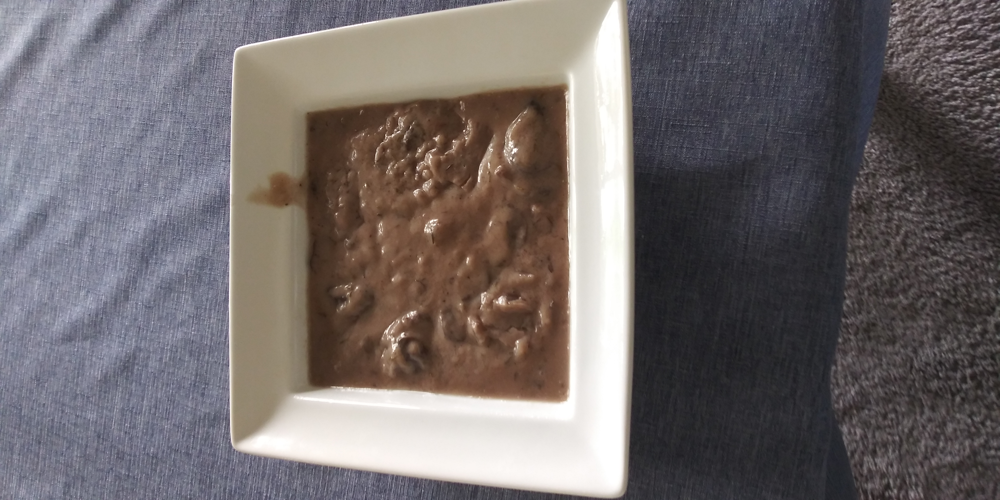

Cream of Mushroom Soup

Description
If one is looking for a dark, creamy soup that can comfort
and warm a person on even the coldest of days, then look
no further. This rich, full-bodied soup when paired with
a slice of fresh bread serves as either an appetizer or
full meal in itself. Either a dry red or dry white wine
work with this recipe. I prefer the flavors of the red.
It is also fun to note that this soup tastes better the
second day. Perhaps it is worthwhile to cook it for dinner
the night before in order to fully enjoy it. It tastes
better than it looks, trust me.
Ingredients
- 4 Tbs of butter
- 1 Tbs of oil
- 2 onions, diced
- 4 cloves of minced garlic
- 1.5 lbs chopped mushrooms
- 4 Tsp thyme
- 6 Tbs flour
- 4 cups of chicken broth
- salt/pepper to taste
- 2 beef buillon cubes
- 1 cup heavy cream
- 1.5 cups of dry wine
- Chopped thyme & parsley
Steps
- Melt butter in large pot
- Saute onions until soft and transluscent. Add garlic
and cook until fragrant.
- Add mushrooms and thyme. Cook for 5 minutes.
- Add the wine. Mix and cook for 3 minutes. Then mix
in the flour and cook for 2 minutes.
- Add the stock and bring to a boil, then reduce
heat to med-low. Add salt, pepper, and bouillon
cubes.
- Cover and simmer for 10-15 minutes until thickened.
- Put heat on low and add cream. Simmer for a few minutes.
- Take off heat. Add parsley & thyme as garnish. Serve.